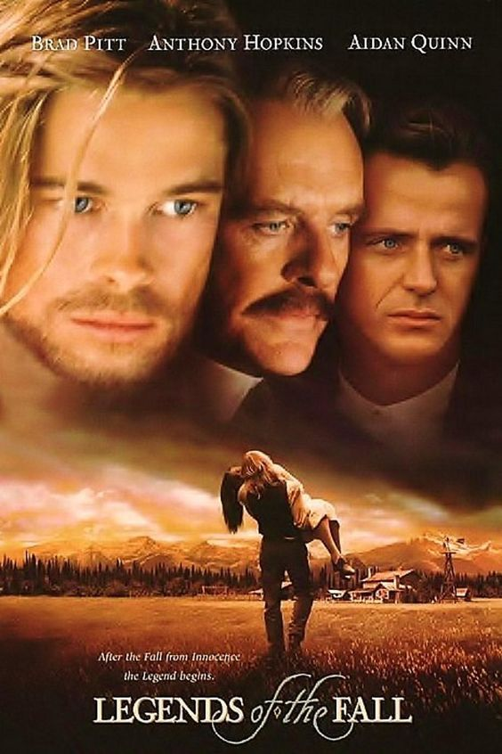

«Легенди осені» (англ. Legends of the Fall)
Опис фільму:
Американський художній фільм 1994 року режисера Едварда Цвіка, екранізація новели Джима Гаррісона. Часові рамки охоплюють початок 1900-х, Першу світову війну, епоху заборони алкоголю і закінчуються подією у 1963 році.
Сюжет:
Легенда про відвагу, кохання, вірність і зраду на фоні чудових краєвидів Монтани. Відставний кавалерійський полковник Вільям Ладлов живе зі своїми синами Трістаном, Альфредом і Семюелем. Коли Семюель повертається з коледжу з нареченою Сюзанною, починаються зміни в долях сім'ї. Після трагічної загибелі Семюеля у Першій світовій війні, Трістан і Альфред починають суперництво за любов Сюзанни, що загрожує розколоти сім'ю.